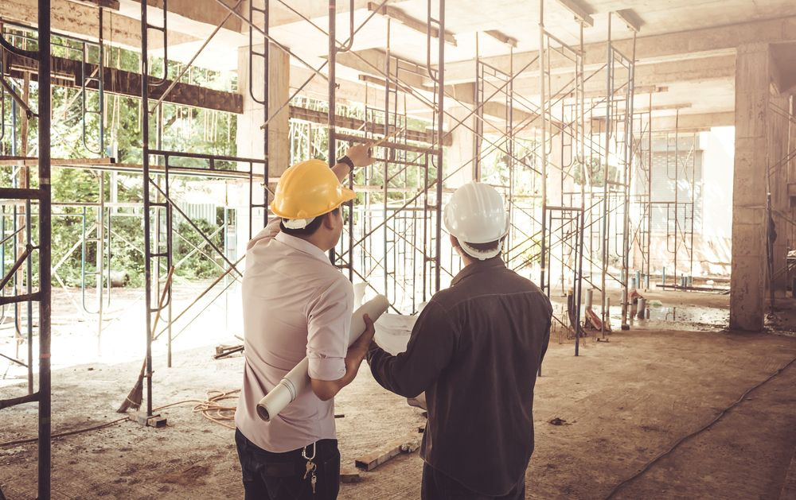

STANDARDI KVALITETA
Kvalitet na svakom koraku!
Odlučite se za dom koji će vam doneti radost svakog dana. Naša posvećenost kvalitetu garantuje da ćete dobiti više od običnog stambenog prostora. Izaberite vrhunski kvalitet - izaberite nas.
Naša posvećenost kvalitetu donosi vam dom koji se izdvaja u svakom detalju.
Naše bogato i višegodišnje iskustvo u gradnji, kako na domaćem tržištu tako i širom Evrope, dovelo nas je do visokih standarda kada su u pitanju tehnička rešenja ali i pažljiv izbor i upotreba najkvalitetnijih i najsavremenijih materijalia.
Prilikom izgradnje Kompleksa upotrebili smo armirano-betonske šipove i temelje povezanih temeljnom pločom, što pruža stabilan oslonac, u skladu sa svim saizmičkim propisima koji osigurava stabilnost objekta čak i u slučaju jačih zemljotresa, a takođe pruža takav oslonac objektima da su mogućnosti sleganja svedena na apsolutni minimum.
Svi zidovi objekta imaju najbolju zvučnu i toplotnu izolaciju budući da smo za pregradne zidove izabrali najkvalitetnije termo blokove koji postoje na tršištu sa poboljšanim termičkim karakteristikama, na koje apliciramo zvučnu izolaciju strane proizvodnje koja će sprečiti prodiranje zvuka iz susednih prostorija u jednom stanu, dok se između stanova koristi unapređena verzija zvučne izolacije koja nivo prodora buke smanjuje na apsolutni minimum.
Koristimo najkvalitetnije elektro-instalacije domaćih prizvođača sa elektro-galanterijom modularnog tipa. Do svakog stana biće dopremljen optički kabl. Ostavljena je mogućnost nadogradnje i implementiranja „smart house“ sistema (daljinsko upravljanje bojlerima, klimatizacijom, rasvetom itd.)
Stanovi će imati najmodernije podno grejanje.
Svi stanovi su opremljeni klima uređajima odličnih performansi.
Fasadnu stolariju koju ugrađujemo na Kompleksu, zbog svojih izuzetnih karakteristika i termičkih performansi, možemo svrstati u red najkvalitetnije šestokomorne unapređene PVC stolarije koje tržište može da ponudi, svaki stan će imati termo roletne, na elektro pogon i komarnike.
Svaki stan će imati sigurnosna vrata po EU standardima, sa ojačanim šarkama i kodiranim ključevima uz potpunu termo i zvučnu izolaciju po svim protivpožarnim standardima, dok će sobna vrata imati najviši nivo završne obrade materijala i punu zvučnu i termo-izolaciju.
Parket koji ugrađujemo je prvoklasni kompozitni višeslojni parket koje uvozimo iz Švajcarske. Parket je visokokvalitetan i ekonomičan za održavanje, izuzetno otporan na vlagu i habanje sa završnom lajsnom od MDF-a u beloj boji, visine h=6-8 cm.
Keramika koju ugrađujemo je kombinacija nekoliko italijanskih premium brendova prve klase. Keramika je velikih formata i biće ugrađena od poda do plafona u kupatilima i toaletima, a u kuhinjama od poda do visine visećih elemenata, dok će u hodnicima i terasama biti primenjena protivklizajuća keramika otporna na udarce i atmosferske prilike.
Sanitarije koje ugrađujemo predstavljaju kombinaciju nekoliko vodećih brendova u ovoj oblasti, tako da smo se opredelili za najfunkcionalnija i estetski najefektnija rešenja.
Fasada zgrade biće premijum kvaliteta i na njoj će biti primenjeno nekoliko različitih tehnika, od kojih svaka poseduje najviše termo-izolacijske karakteristike. Frontalni objekti imaće kombinaciju tehnike mermerne fasade i demit fasade sa kamenom vunom, sa apliciranim delovima mermerne atike, dok će uvučeni objekti imati demit fasadu sa kamenom vunom. Bočni uzidani zidovi posedovaće klasičnu demit fasadu.